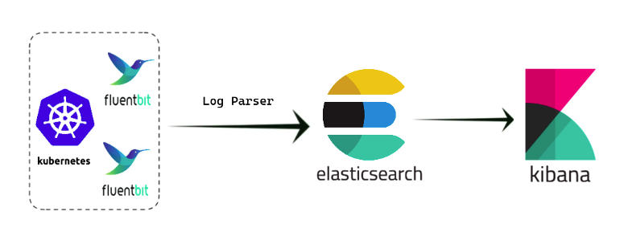
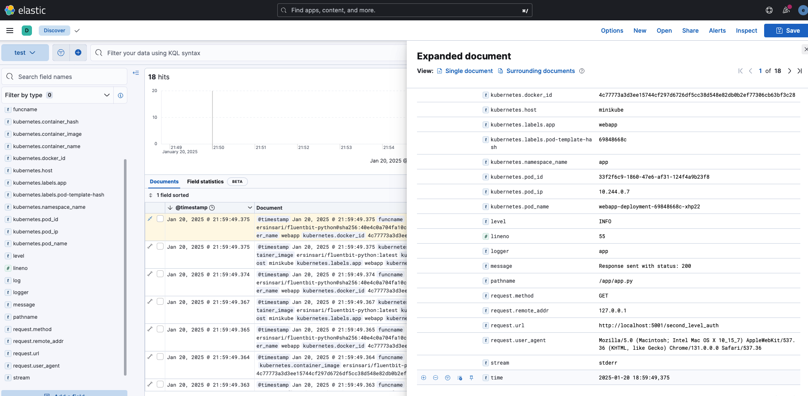

EFK Stack (Elasticsearch, Fluentbit, Kibana) via Minikube
EFK is a popular logging stack used to collect, store, and analyze logs in Kubernetes. Elasticsearch: Stores and indexes log data for easy retrieval. Fluentbit: A lightweight log forwarder that collects logs from different sources and sends them to Elasticsearch. Kibana: A visualization tool that allows users to explore and analyze logs stored in Elasticsearch.

Step-by-Step Setup on minikube
Create cluster
Create Namespace for Logging
kubectl create namespace logging
```
### Install Elasticsearch on K8s
```bash
helm repo add elastic https://helm.elastic.co
helm install elasticsearch \
--set replicas=1 \
--set persistence.enabled=false elastic/elasticsearch -n logging
```
### Install Kibana
```bash
helm install kibana elastic/kibana -n logging
kubectl port-forward svc/kibana-kibana 5601:5601 -n logging
```
- Go to localhost:5601 and login Kibana
### Retrieve Elasticsearch Username & Password
```bash
# for username
kubectl get secrets --namespace=logging elasticsearch-master-credentials -ojsonpath='{.data.username}' | base64 -d
# for password
kubectl get secrets --namespace=logging elasticsearch-master-credentials -ojsonpath='{.data.password}' | base64 -d
```
### Install Fluentbit with Custom Values/Configurations
👉 Note: Please update the HTTP_Passwd field in the fluentbit-values.yml file with the password retrieved earlier in step 6: (i.e NJyO47UqeYBsoaEU)"
fluentbit-values.yaml
```yaml
kind: DaemonSet
replicaCount: 1
image:
repository: cr.fluentbit.io/fluent/fluent-bit
service:
type: ClusterIP
port: 2020
luaScripts: {}
## https://docs.fluentbit.io/manual/administration/configuring-fluent-bit/classic-mode/configuration-file
config:
service: |
[SERVICE]
Daemon Off
Flush {{ .Values.flush }}
Log_Level info
Parsers_File /fluent-bit/etc/parsers.conf
Parsers_File /fluent-bit/etc/conf/custom_parsers.conf
HTTP_Server On
HTTP_Listen 0.0.0.0
HTTP_Port {{ .Values.metricsPort }}
Health_Check On
## https://docs.fluentbit.io/manual/pipeline/inputs
inputs: |
[INPUT]
Name tail
Path /var/log/containers/webapp-deployment*.log
multiline.parser docker, cri
Tag kube.*
Mem_Buf_Limit 5MB
Skip_Long_Lines On
## https://docs.fluentbit.io/manual/pipeline/filters
filters: |
[FILTER]
Name kubernetes
Match kube.*
Merge_Log On
Keep_Log Off
K8S-Logging.Parser On
K8S-Logging.Exclude On
# https://docs.fluentbit.io/manual/pipeline/outputs
outputs: |
[OUTPUT]
Name es
Match kube.*
Type _doc
Host elasticsearch-master
Port 9200
HTTP_User elastic
HTTP_Passwd xB7UdQgmGkgRaCrH
tls On
tls.verify Off
Logstash_Format On
Logstash_Prefix ersin-fluntbit
Retry_Limit False
Suppress_Type_Name On
## https://docs.fluentbit.io/manual/pipeline/parsers
customParsers: |
[PARSER]
Name docker_no_time
Format json
Time_Keep Off
Time_Key time
Time_Format %Y-%m-%dT%H:%M:%S.%L
volumeMounts:
- name: config
mountPath: /fluent-bit/etc/conf
daemonSetVolumes:
- name: varlog
hostPath:
path: /var/log
- name: varlibdockercontainers
hostPath:
path: /var/lib/docker/containers
- name: etcmachineid
hostPath:
path: /etc/machine-id
type: File
daemonSetVolumeMounts:
- name: varlog
mountPath: /var/log
- name: varlibdockercontainers
mountPath: /var/lib/docker/containers
readOnly: true
- name: etcmachineid
mountPath: /etc/machine-id
readOnly: true
command:
- /fluent-bit/bin/fluent-bit
args:
- --workdir=/fluent-bit/etc
- --config=/fluent-bit/etc/conf/fluent-bit.conf
helm repo add fluent https://fluent.github.io/helm-charts
helm upgrade --install fluent-bit fluent/fluent-bit -f fluentbit-values.yaml -n logging
```
Service Section
Defines global configuration settings for the Fluent Bit service.
Daemon Off: Runs Fluent Bit in the foreground.
Flush {{ .Values.flush }}: Sets the flush interval for sending data, using a configurable Helm value.
Log_Level info: Sets the logging level to info.
Parsers_File: Specifies parser configuration files.
HTTP_Server On: Enables the built-in HTTP server for metrics and health checks.
HTTP_Listen 0.0.0.0: Sets the HTTP server to listen on all network interfaces.
HTTP_Port {{ .Values.metricsPort }}: Sets the HTTP server port for metrics, using a Helm value.
Inputs Section
Defines where Fluent Bit collects logs from.
[INPUT] Name tail: Specifies the input plugin tail to read log files.
Path /var/log/containers/webapp-deployment.log*: Specifies the log file path to monitor.
multiline.parser docker, cri: Enables multi-line log parsing using Docker and CRI parsers.
Tag kube.*: Tags logs with a kube.* prefix for filtering.
Mem_Buf_Limit 5MB: Sets the memory buffer limit to 5MB.
Skip_Long_Lines On: Skips lines longer than the buffer limit.
Filters Section
Processes and enriches logs before output.
[FILTER] Name kubernetes: Uses the kubernetes filter plugin for Kubernetes metadata enrichment.
Match kube.*: Filters logs with tags matching kube.*.
Merge_Log On: Combines partial log lines into a single entry.
Keep_Log Off: Drops the original unparsed log after merging.
K8S-Logging.Parser On: Uses parsers for logs based on Kubernetes metadata.
K8S-Logging.Exclude On: Excludes logs that don't match certain Kubernetes metadata.
Output Section
[OUTPUT] Name es: Specifies the Elasticsearch output plugin.
Match kube.*: Sends logs with tags matching kube.*.
Type _doc: Specifies the document type (deprecated in modern Elasticsearch versions).
Host elasticsearch-master, Port 9200: Sets the Elasticsearch host and port.
HTTP_User, HTTP_Passwd: Provides authentication credentials for Elasticsearch.
tls On: Enables TLS for secure communication.
tls.verify Off: Disables certificate verification (not recommended in production).
Logstash_Format On: Formats logs in Logstash-compatible JSON.
Logstash_Prefix ersin-fluntbit: Sets the prefix for Elasticsearch index names.
Retry_Limit False: Disables retrying on output failures.
Custom Parsers Section
Defines custom log parsing rules.
[PARSER] Name docker_no_time: Names the parser docker_no_time.
Format json: Specifies that the log format is JSON.
Time_Keep Off: Ignores the timestamp from the original log.
Time_Key time: Specifies the JSON key for extracting timestamps.
Time_Format %Y-%m-%dT%H:%M:%S.%L: Defines the timestamp format with milliseconds.
## Deploy App for log
python-app-service.yaml
```yaml
apiVersion: v1
kind: Service
metadata:
name: webapp-service
namespace: app
labels:
app: webapp
spec:
selector:
app: webapp
ports:
- port: 80
targetPort: 5005
python-app-deployment.yaml
apiVersion: apps/v1
kind: Deployment
metadata:
name: webapp-deployment
namespace: app
labels:
app: webapp
spec:
replicas: 1
selector:
matchLabels:
app: webapp
template:
metadata:
labels:
app: webapp
spec:
containers:
- name: webapp
image: ersinsari/fluentbit-python:latest
volumeMounts:
- mountPath: /log
name: log-volume
volumes:
- name: log-volume
hostPath:
path: /var/log/webapp
type: DirectoryOrCreate
bash
k create ns app
k apply -f python-app-service.yaml
k apply -f python-app-deployment.yaml
Access the App and generate log
bash
kubectl port-forward svc/webapp-service 5001:80 -n app
```yaml username: ersin password: password
If you enter username and credential right generate info log but wrong generate warn log
Go to Kibana UI --> Stack Management -- > Kibana --> Data View create new data view
```yaml
name: ersin-fluntbit
filter: ersin-fluntbit*
{"level": "INFO", "message": "Response sent with status: 200", "time": "2025-01-20 18:59:49,375", "logger": "app", "pathname": "/app/app.py", "lineno": 55, "funcname": "log_response_info", "request": {"method": "GET", "url": "http://localhost:5001/second_level_auth", "remote_addr": "127.0.0.1", "user_agent": "Mozilla/5.0 (Macintosh; Intel Mac OS X 10_15_7) AppleWebKit/537.36 (KHTML, like Gecko) Chrome/131.0.0.0 Safari/537.36"}}
{"level": "WARNING", "message": "Login failed for user: ersin", "time": "2025-01-20 18:59:49,364", "logger": "app", "pathname": "/app/app.py", "lineno": 75, "funcname": "login", "request": {"method": "POST", "url": "http://localhost:5001/login", "remote_addr": "127.0.0.1", "user_agent": "Mozilla/5.0 (Macintosh; Intel Mac OS X 10_15_7) AppleWebKit/537.36 (KHTML, like Gecko) Chrome/131.0.0.0 Safari/537.36"}}
- Go to Discover section and check logs
The application logs were sent to the index in JSON format using a parser, which split the logs into fields. This allows for faster queries and makes it easier to find specific logs.
